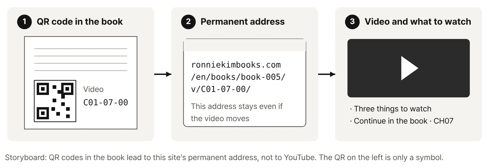
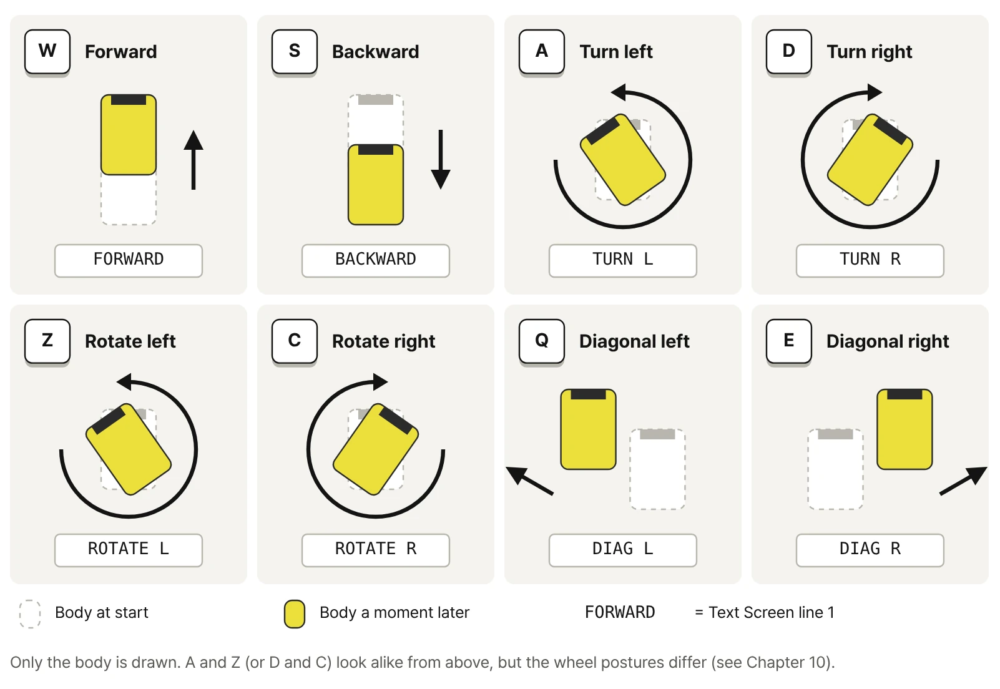
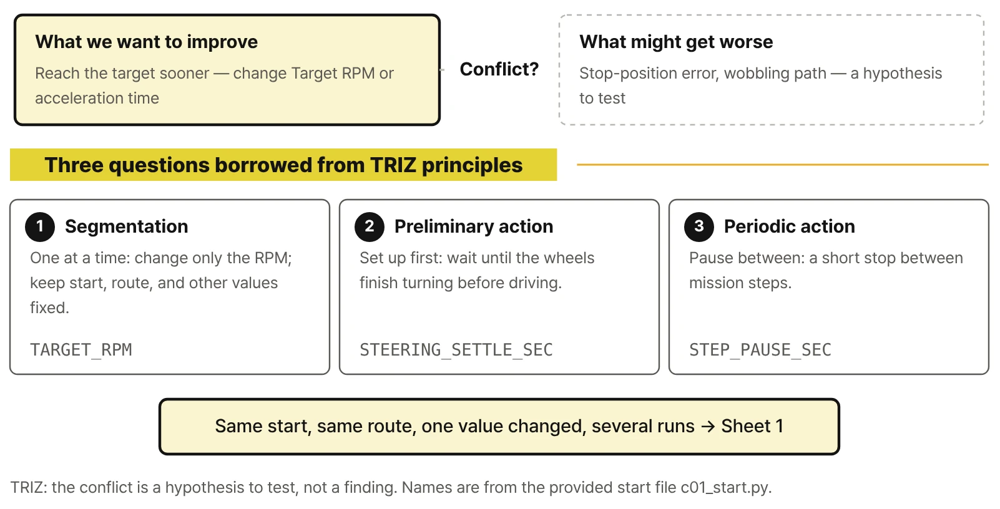
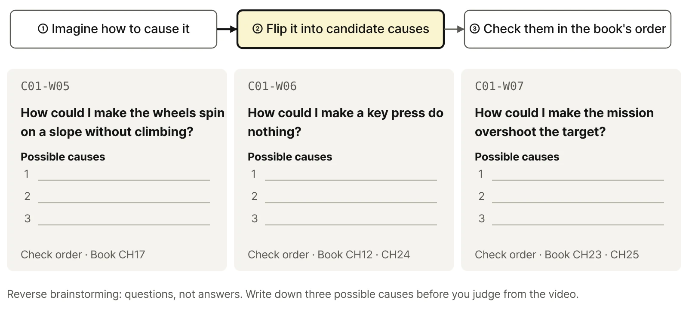
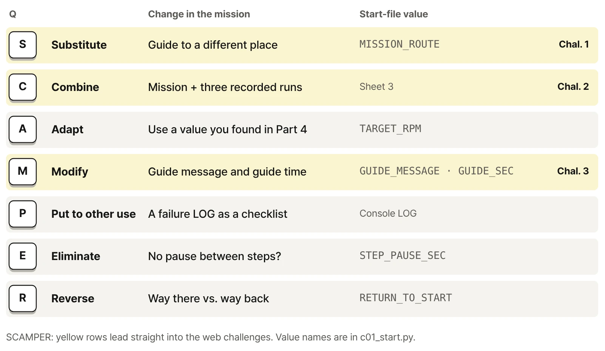

Robot structure and exploded view C01-06-00
- Each wheel module carries a drive motor and a steering servo together
- Where the guide screen separates from the top of the body
- The order in which the four wheel modules go back on
Physical AI with RoboCo · CORE-01 · Web only

Web only · Video first
This page doesn't repeat the book. It shows in motion the scenes that sit still on the page, and it collects comparison videos, failure clips, and challenges you won't find in the book. Each video tells you only what to watch for. Why the robot moves that way and how to change it is in the matching chapter.
Here is the book's final mission, run start to finish. One key press sends the robot to the guide point, where it opens its screen, folds it again, and drives the same route back. The QR code in Chapter 25 links to this video.

Part 2 of the book unpacks the robot's structure with figures and tables. Here you watch the same robot taken apart and follow the Microcontroller's connections. Both videos are also linked from QR codes in Chapters 6 and 7.
Why the book assigns Ports explicitly instead of relying on auto-detection is explained in the book.
Continue in the book · CH07The book shows these motions as still pictures. Here they play at full speed, one short clip per key. Each card below says what to look for.

A and Z both turn the body left, yet the wheel posture is completely different. The book explains what makes the difference with a top view of all four wheels.
Continue in the book · CH10Two runs on the same course from the same starting point, with only one setting changed, played side by side. Notice what looks different before you look at any numbers. Part 4 of the book covers which conditions have to stay the same for a fair comparison and how to record the results.
What to watch
First, learn to tell a stalled wheel from a slipping wheel, and both from a body that's hung up on the slope.
Continue in the book · CH17What to watch
Watch the gap between where the key is released and where the body fully stops.
Continue in the book · CH19What to watch
Watch the order in which front and rear wheels turn, and whether the body wobbles while they do.
Continue in the book · CH18
These are the failures you're most likely to run into, recorded as they happen. Don't settle on an answer from the video alone; write down possible causes first. The book gives the order for ruling them out.
What to watch
Will a higher RPM fix it? Before deciding from the video, write down three possible causes.
Continue in the book · CH17What to watch
The LED blinks but the wheels stay still. Did the input arrive at all?
Continue in the book · CH12 · CH24What to watch
The script logs every step as finished. So where is the robot?
Continue in the book · CH23 · CH25
Practice videos added after publication.
A screen recording of the whole setup: installing from Steam, opening Sandbox mode, loading the robot, connecting the start file, and the first run. Install screens change often, so the book sticks to the steps that rarely change, and this page keeps up with the latest screens.
Things to try once you've finished the book's final mission. No solution code is posted; the chapters listed with each challenge cover the ideas and methods you need.
Pick a guide point on the reference map other than the one in the book, build a new route to it, and return to the start after guiding.
pauseRun the same mission three times and record the return position; then change one value and run three more times.
Choose a message that fits your guide point and make it readable the moment the screen opens.

Everything you need to start the book's exercises. Each file comes with version and compatibility notes. The book's Getting Started section explains where to unzip the files and how to connect them, and Appendix A shows the folder layout.
Book-CORE-01-CONTROLS for keyboard driving (CH01, CH20) and Book-CORE-01-SCRIPT_PART for Python control (CH02–25). Load them as described in the book's Getting Started section.
Book_C01_Robot release v1.6.3 · the practice code for driving, experiments, and the mission, with comments and the README in English. Unzip it directly inside RoboCo's Scripts folder.
Three A4 pages · Sheet 1 Part 4 setting comparison, Sheet 2 Part 5 mission check, Sheet 3 web-only challenges. You can also print them from the print-friendly page.
Practice files page: individual files, folder layout, versions, and checksums

Book-CORE-01-CONTROLS
Book-CORE-01-SCRIPT_PART| Manuscript baseline | Book_C01_Robot release v1.6.3 · RoboCo API 0.3.1 |
|---|---|
| Robot files | Book-CORE-01-CONTROLS · Book-CORE-01-SCRIPT_PART (2026-09-30) |
| Record sheets | Three A4 pages (2026-10-08) · Download |
| Checksums | SHA-256 · manifest.json |
| Compatibility | If a RoboCo update changes screens or behavior, compatibility notes and updated files will be posted here. |
| Errata | No errata so far. Confirmed corrections will be posted here with dates. |
If screens, logs, or key behavior differ from the book, check versions first. For the rest of the series, see the series table on the book page.